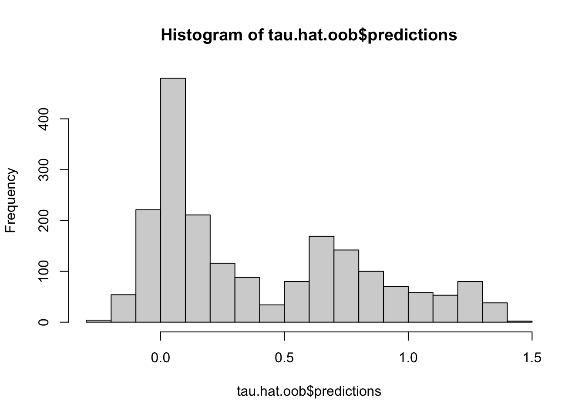
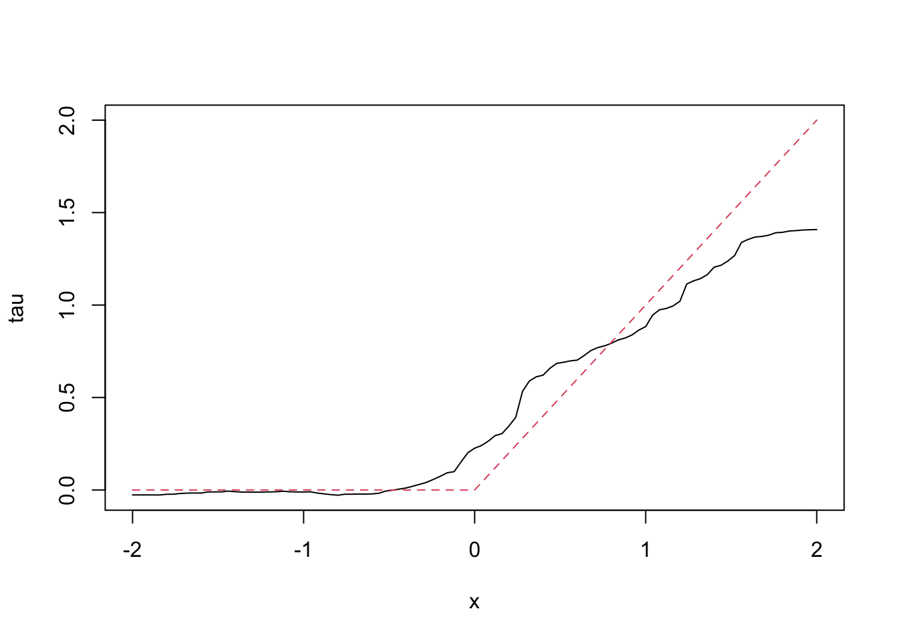
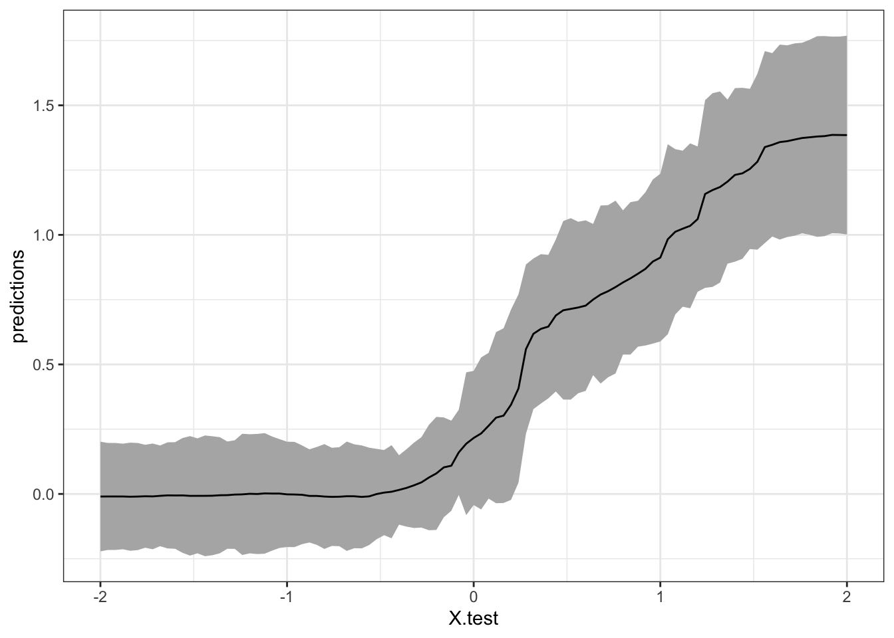
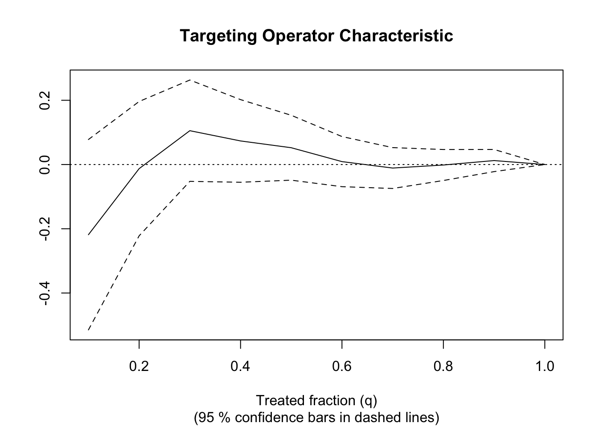

4.5 An example of causal forest
rm(list = ls())
library(devtools)## Loading required package: usethis#devtools::install_github("grf-labs/grf", subdir = "r-package/grf")
library(grf)
library(ggplot2)
# generate data
n <- 2000
p <- 10
X <- matrix(rnorm(n * p), n, p)
X.test <- matrix(0, 101, p)
X.test[, 1] <- seq(-2, 2, length.out = 101)
# Train a causal forest.
W <- rbinom(n, 1, 0.4 + 0.2 * (X[, 1] > 0))
Y <- pmax(X[, 1], 0) * W + X[, 2] + pmin(X[, 3], 0) + rnorm(n)
# Train a causal forest
c.forest <- causal_forest(X, Y, W)
# predict using the training data using out-of-bag prediction
tau.hat.oob <- predict(c.forest)
hist(tau.hat.oob$predictions)
# Estimate treatment effects for the test sample
tau.hat <- predict(c.forest, X.test)
plot(X.test[, 1], tau.hat$predictions, ylim = range(tau.hat$predictions, 0, 2), xlab = "x", ylab = "tau", type = "l")
lines(X.test[, 1], pmax(0, X.test[, 1]), col = 2, lty = 2)
# estimate conditional average treatment effect (CATE) on the full sample
cate <- average_treatment_effect(c.forest, target.sample = "all")
print(paste("Conditinal Average Treatment Effect (CATE) is: ", cate[[1]]))## [1] "Conditinal Average Treatment Effect (CATE) is: 0.405843073161648"# estimate conditional average treatment effect on treated
catt <- average_treatment_effect(c.forest, target.sample = "treated")
paste("Conditional Average Treatment Effect on the Treated (CATT)", catt[[1]])## [1] "Conditional Average Treatment Effect on the Treated (CATT) 0.492339168239352"# Add confidence intervals for heterogeneous treatment effects; growing more trees recommended
tau.forest <- causal_forest(X, Y, W, num.trees = 4000)
tau.hat <- predict(tau.forest, X.test, estimate.variance = TRUE) # for the test sample
ul <- tau.hat$predictions + 1.96 * sqrt(tau.hat$variance.estimates)
ll <- tau.hat$predictions - 1.96 * sqrt(tau.hat$variance.estimates)
tau.hat$ul <- ul
tau.hat$ll <- ll
tau.hat$X.test <- X.test[,1]
ggplot(data = tau.hat, aes(x = X.test, y = predictions)) +
geom_ribbon(aes(ymin = ll, ymax = ul), fill = "grey70") + geom_line(aes(y = predictions)) +
theme_bw()
######################################################
#
#
# In some cases prefitting Y and W separately may
# be helpful. Say they use different covariates.
#
######################################################
# Generate a new data
n <- 4000
p <- 20
X <- matrix(rnorm(n * p), n, p)
TAU <- 1 / (1 + exp(-X[, 3]))
W <- rbinom(n, 1, 1 / (1 + exp(-X[, 1] - X[, 2]))) # X[, 1] and X[, 2] influence W
Y <- pmax(X[, 2] + X[, 3], 0) + rowMeans(X[, 4:6]) / 2 + W * TAU + rnorm(n) # X[, 2], X[, 3], X[, 4:6] influence Y. So different set of Xs influence Y
# Build a separate forest for Y and W
forest.W <- regression_forest(X, W, tune.parameters = "all")
W.hat <- predict(forest.W)$predictions # this gives us the estimated propensity score (probability of treated)
#plot(W.hat, X[, 1], col = as.factor(W))
#plot(W.hat, X[, 2], col = as.factor(W))
forest.Y <- regression_forest(X, Y, tune.parameters = "all") # note that W is not used here
Y.hat <- predict(forest.Y)$predictions # this gives the conditional mean of Y or m(x)
#plot(Y, Y.hat)
forest.Y.varimp <- variable_importance(forest.Y)
forest.Y.varimp## [,1]
## [1,] 0.002939109
## [2,] 0.464324588
## [3,] 0.386426876
## [4,] 0.040967280
## [5,] 0.025417033
## [6,] 0.053186112
## [7,] 0.002563865
## [8,] 0.001711964
## [9,] 0.001464095
## [10,] 0.001727238
## [11,] 0.002546653
## [12,] 0.001280970
## [13,] 0.002841205
## [14,] 0.002328143
## [15,] 0.001422961
## [16,] 0.001131292
## [17,] 0.001542447
## [18,] 0.002144746
## [19,] 0.002829431
## [20,] 0.001203992# selects the important variables
selected.vars <- which(forest.Y.varimp / mean(forest.Y.varimp) > 0.2)
selected.vars## [1] 2 3 4 5 6# Trains a causal forest
tau.forest <- causal_forest(X[, selected.vars], Y, W,
W.hat = W.hat, Y.hat = Y.hat, # specify e(x) and m(x)
tune.parameters = "all")
# See if a causal forest succeeded in capturing heterogeneity by plotting
# the TOC and calculating a 95% CI for the AUTOC.
train <- sample(1:n, n / 2)
train.forest <- causal_forest(X[train, ], Y[train], W[train])
eval.forest <- causal_forest(X[-train, ], Y[-train], W[-train])
rate <- rank_average_treatment_effect(eval.forest,
predict(train.forest, X[-train, ])$predictions)
rate ## estimate std.err target
## -0.002787873 0.04889062 priorities | AUTOCplot(rate)
paste("AUTOC:", round(rate$estimate, 2), "+/", round(1.96 * rate$std.err, 2))## [1] "AUTOC: 0 +/ 0.1"